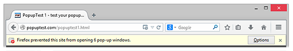
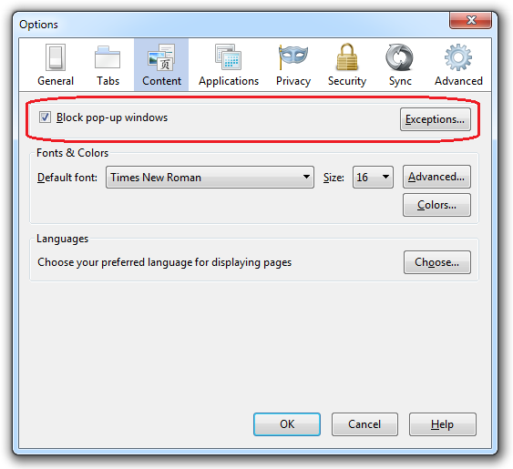

Pop Up Blocker
Pop-up windows, or pop-ups, are windows that appear automatically without your permission. They vary in size but usually don't cover the whole screen. Some pop-ups open on top of the current Firefox window, while others appear underneath Firefox (pop-unders). Firefox allows you to control both pop-ups and pop-unders through the Content panel in the Options window. Pop-up blocking is turned on by default, so you don't have to worry about enabling it to prevent pop-ups from appearing in Firefox.
This May look like this.
Pop-up blocker settings
Access the pop-up blocker settings:
Click the menu button and choose Options Select the Content panel.
